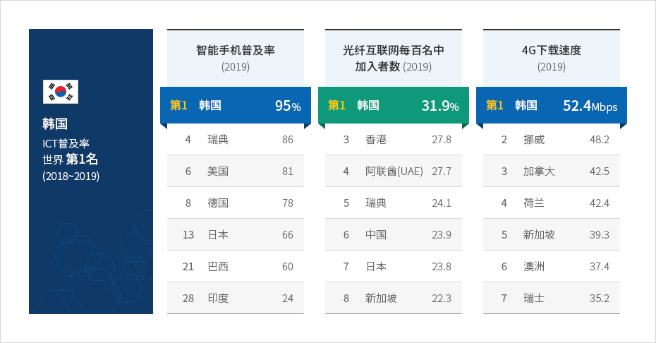
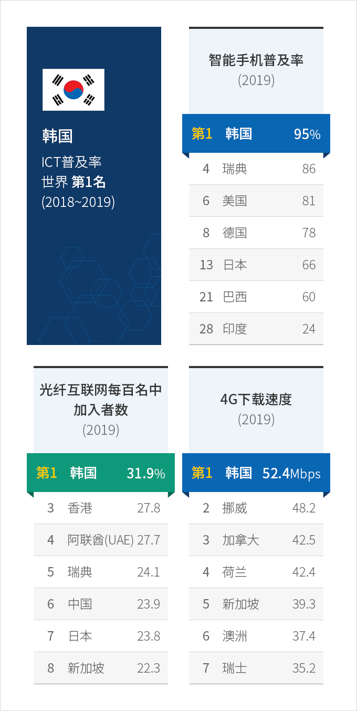
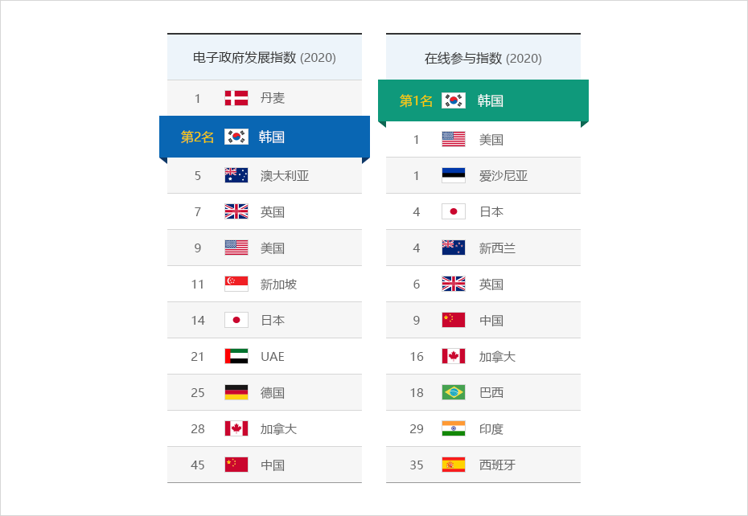
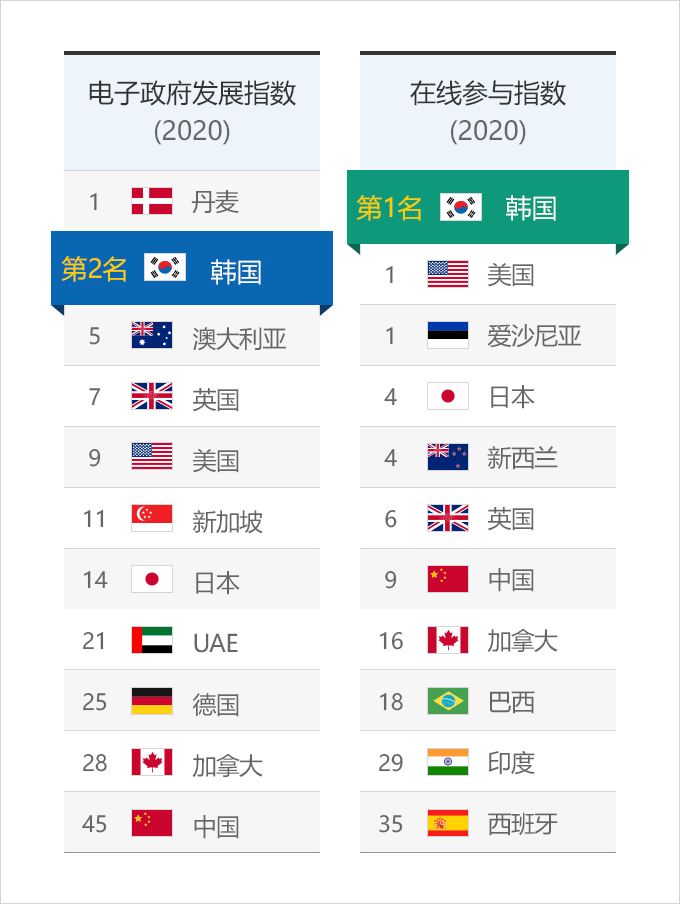

数字设施
- Home
- Why KOREA
- 基础设施
- 数字设施
数字基建冠绝全球
世界经济论坛（WEF）资料显示，韩国信息通信技术（ICT）普及率连续两年登顶世界榜首。
韩国可谓全球信息通信技术（ICT）领导者，数字基础设施已达世界最高水平，在世界范围内首次将5G投入商用（2019年4月）。
韩国政府计划投入“数字新政”，大幅提高投资，完善数字基建。
韩国可谓全球信息通信技术（ICT）领导者，数字基础设施已达世界最高水平，在世界范围内首次将5G投入商用（2019年4月）。
韩国政府计划投入“数字新政”，大幅提高投资，完善数字基建。



韩国 ICT普及率 第1名 (2018~2019)
-
智能手机普及率 (2019)
- 第1名 韩国 95%
- 第4名 瑞典 86%
- 第6名 美国 81%
- 第8名 德国 78%
- 第13名 日本 66%
- 第21名 巴西 60%
- 第28名 印度 24%
-
光纤互联网每百名中加入者数(2019)
- 第1名 韩国 31.9%
- 第2名 新加坡 22.3%
- 第3名 香港 27.8%
- 第4名 阿联酋(UAE) 27.7%
- 第5名 瑞典 24.1%
- 第6名 中国 23.9%
- 第7名 日本 23.8%
-
4G下载速度(2019)
- 第1名 韩国 52.4Mbps
- 第2名 挪威 48.2Mbps
- 第3名 加拿大 42.5Mbps
- 第4名 荷兰 42.4Mbps
- 第5名 新加坡 39.3Mbps
- 第6名 澳洲 37.4Mbps
- 第7名 瑞士 35.2Mbps

※ 来源 : 世界经济论坛(WEF) 2019、皮尤研究中心(2019)、Open Signal(2019)
韩国电子政务走向海外
韩国在联合国电子政府调查报告中连续两年位列电子参与单元第一名，电子政务发展指数位居世界第二。
此外，韩国电子政务系统出口海外，在世界范围内广受好评。
韩国电子政务的优越性不仅体现出韩国政府对于数字化（Digitalization）的强大决心，也展示了韩国数码基础设施的优点。
此外，韩国电子政务系统出口海外，在世界范围内广受好评。
韩国电子政务的优越性不仅体现出韩国政府对于数字化（Digitalization）的强大决心，也展示了韩国数码基础设施的优点。


电子政府发展指数 (2020)
- 第1名 丹麦
- 第2名 韩国
- 第5名 澳大利亚
- 第7名 英国
- 第9名 美国
- 第11名 新加坡
- 第14名 日本
- 第21名 UAE
- 第25名 德国
- 第28名 加拿大
- 第45名 中国
- 第1名 韩国
- 第1名 美国
- 第1名 爱沙尼亚
- 第4名 日本
- 第4名 新西兰
- 第6名 英国
- 第9名 中国
- 第16名 加拿大
- 第18名 巴西
- 第29名 印度
- 第35名 西班牙

※ 来源：2020联合国电子政务调查(2020.07.10)